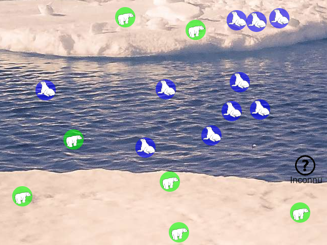

Révisions Terminale NSI¶
Petit échauffement avant d'attaquer l'année !
Rappels de programmation Python¶
Attention
Les notions de programmation à maitriser pour aborder correctement cette année :
-
Bases de la programmation Python
- Variables
- Types de données
- Fonctions
- Boucles for / while
-
- Listes
- Dictionnaires
- P-uplets
I. Activité de révision avec l'algorithme des K plus proches voisins (KNN)¶
À vous de réfléchir (pas trop longtemps svp)
Selon vous, il est plus probable que l'animal inconnu présent en bas à droite de l'image et représenté par un '?', soit un ours ou un phoque ? Selon quel(s) critère(s) ?

Information
Cet exemple est représentatif de la nécessité de disposer d'une méthode de classification des motifs. Une réponse a été apportée par la faculté de médecine aéronautique de l'US Air Force dans un rapport publié en 1951, connue depuis sous la règle des k plus proches voisins (Fix \& Hodges, 1951).
L’algorithme des k plus proches voisins s’écrit en abrégé k-NN ou KNN, k-nearest neighbors. k est un nombre entier positif généralement petit et impair. Il s’agit d’un des algorithmes de machine learning ou "apprentissage machine" qui est essentiel dans le milieu de l’intelligence artificielle. Ce genre d’algorithme permet par exemple de prédire le comportement d’une personne en s’intéressant à son milieu. Il peut être utilisé par des géants de la vente comme Amazon ou Netflix afin de vous suggérer un produit (film, musique, etc.). En effet, en disposant de vos données (âge, derniers achats, etc.) et en les comparant à celle d’un client qui a acheté un produit, un algorithme peut tâcher de prédire si vous seriez intéressé ou non par le produit (vous catégoriser).
Objectif
Dans cette activité, vous allez utiliser l'algorithme des k plus proches voisins (KNN) afin de prédire si une zone est susceptible d'abriter une population de renards.
Consignes¶
À lire avant de commencer
- Les fichiers fournis doivent être utilisés et complétés.
- Certains moments de l'activité sont prévus pour faire valider votre travail.
Contexte¶
Le renard est un animal capable de vivre dans des milieux très variés :
- plaines ;
- montagnes ;
- campagnes ;
- zones périurbaines ;
- villes.
Depuis la loi Biodiversité de 2016 et l'arrêté du 3 août 2023, le renard n'est plus classé comme « nuisible », mais comme « susceptible d'être nuisible ».
Afin de mieux connaître sa répartition, on souhaite déterminer si une zone est favorable à la présence de renards à partir de plusieurs caractéristiques.
Les caractéristiques d'une zone¶
Chaque habitat est décrit par les caractéristiques suivantes, notées sur une échelle de 1 à 10 :
- 🌿 végétation ;
- 💧 proximité de l'eau ;
- 🏙 densité urbaine ;
- 🐭 disponibilité des proies.
Pour les habitats déjà étudiés, une information supplémentaire est connue :
- 🦊 présence ou non d'un renard (
TrueouFalse).
Jeu de données¶
Les données sont fournies dans le fichier donnees_habitats.py
Fichier à télécharger
Exemple :
zones_connues = [
{
"vegetation": 9,
"proximite_eau": 6,
"densite_urbaine": 0,
"disponibilite_proies": 4,
"presence_renard": True
},
{
"vegetation": 10,
"proximite_eau": 5,
"densite_urbaine": 9,
"disponibilite_proies": 10,
"presence_renard": False
}
]
Le fichier prediction_habitat.py contient plusieurs fonctions à compléter.
Fichier à télécharger
Distance entre deux habitats¶
Deux habitats sont comparés grâce à la distance euclidienne :
où :
- \(v\) : végétation ;
- \(p\) : proximité de l'eau ;
- \(u\) : densité urbaine ;
- \(d\) : disponibilité des proies.
Info
La fonction sqrt() est disponible dans le module math.
❓ Question 1
Écrire la fonction distance qui :
- reçoit deux habitats (dictionnaires) ;
- calcule la distance entre eux ;
- renvoie cette distance.
À ne pas oublier
Pensez à répondre aux questions sur la feuille distribuée en classe.
Les programmes Python servent uniquement à tester et valider vos réponses.
Conseil
Testez régulièrement vos fonctions avant de passer à la question suivante. Un programme correct se construit étape par étape.
❓ Question 2
Écrire la fonction distance_d_un_habitat qui reçoit :
- un habitat ;
- une liste d'habitats.
Elle doit renvoyer une liste de tuples contenant :
- la distance calculée ;
- le dictionnaire représentant l'habitat.
Validation
Faites valider votre fonction par le professeur avant de poursuivre.
À ne pas oublier
Pensez à répondre aux questions sur la feuille distribuée en classe.
Les programmes Python servent uniquement à tester et valider vos réponses.
❓ Question 3
Tester la fonction précédente avec l'habitat nouveau.
Afficher les trois premiers tuples obtenus.
Les résultats attendus sont du type :
(7.211102550927978,
{'vegetation': 9,
'proximite_eau': 6,
'densite_urbaine': 0,
'disponibilite_proies': 4,
'presence_renard': True})
(8.660254037844387,
{'vegetation': 10,
'proximite_eau': 5,
'densite_urbaine': 9,
'disponibilite_proies': 10,
'presence_renard': False})
(5.196152422706632,
{'vegetation': 8,
'proximite_eau': 5,
'densite_urbaine': 1,
'disponibilite_proies': 6,
'presence_renard': False})
Validation
Faites valider votre affichage par le professeur.
À ne pas oublier
Pensez à répondre aux questions sur la feuille distribuée en classe.
Les programmes Python servent uniquement à tester et valider vos réponses.
Décision¶
La fonction presence_renard renvoie :
Truesi plus de la moitié des k voisins contiennent un renard ;Falsesinon.
❓ Question 4
La fonction presence_renard contient une erreur dans le traitement des tuples.
Corriger cette fonction.
À ne pas oublier
Pensez à répondre aux questions sur la feuille distribuée en classe.
Les programmes Python servent uniquement à tester et valider vos réponses.
❓ Question 5
Déterminer si l'habitat nouveau est susceptible d'accueillir une population de renards.
Tester plusieurs valeurs de k et justifier votre conclusion.
Validation
Présentez votre réponse au professeur.
À ne pas oublier
Pensez à répondre aux questions sur la feuille distribuée en classe.
Les programmes Python servent uniquement à tester et valider vos réponses.
À retenir
Un dictionnaire permet de stocker des données sous la forme clé → valeur.
Un dictionnaire est créé avec des accolades :
Les valeurs sont accessibles grâce à leur clé :
renvoie :
Opérations courantes
Ajouter ou modifier une valeur :
Supprimer une entrée :
Tester si une clé existe :
Parcourir un dictionnaire :
II. Activité de révision : Les 4 maisons¶
Objectif
Dans cette activité, vous allez manipuler un dictionnaire de listes représentant les élèves des différentes maisons de Poudlard.
À lire avant de commencer
- Les fichiers fournis doivent être utilisés et complétés.
- Certains moments de l'activité sont prévus pour faire valider votre travail.
Contexte¶
L'école de sorcellerie Poudlard est composée de quatre maisons.
Les élèves sont stockés dans un dictionnaire dont :
- les clés sont les noms des maisons ;
- les valeurs sont des listes contenant les prénoms des élèves.
Les données sont fournies dans le fichier :
Le dictionnaire est le suivant :
eleves = {
"Gryffondor": ["Harry", "Hermione", "Ron", "Neville", "Ginny"],
"Serpentard": ["Draco", "Pansy", "Blaise", "Theodore", "Gregory"],
"Poufsouffle": ["Cedric", "Susan", "Hannah", "Ernie", "Justin"],
"Serdaigle": ["Luna", "Cho", "Terry", "Michael", "Padma"]
}
Fichier à télécharger
❓ Question 1
Écrire une fonction selection_eleves qui :
- prend en paramètre le dictionnaire
eleves; - sélectionne deux élèves au hasard dans chaque maison ;
- renvoie un nouveau dictionnaire contenant uniquement ces deux élèves.
Utiliser le module random.
Exemple de résultat :
{
"Gryffondor": ["Harry", "Ginny"],
"Serpentard": ["Draco", "Pansy"],
"Poufsouffle": ["Cedric", "Hannah"],
"Serdaigle": ["Luna", "Cho"]
}
Validation
Faites valider votre fonction par le professeur.
À ne pas oublier
Pensez à répondre aux questions sur la feuille distribuée en classe.
Les programmes Python servent uniquement à tester et valider vos réponses.
❓ Question 2
Écrire une fonction maison_eleve qui :
- prend en paramètres le dictionnaire
eleveset le prénom d'un élève ; - renvoie le nom de la maison dans laquelle se trouve cet élève ;
- renvoie
Nonesi l'élève n'est pas présent.
Exemple :
Résultat attendu :
Validation
Faites tester votre fonction avant de poursuivre.
À ne pas oublier
Pensez à répondre aux questions sur la feuille distribuée en classe.
Les programmes Python servent uniquement à tester et valider vos réponses.
❓ Question 3
Écrire une fonction ajouter_eleve qui :
- prend en paramètres le dictionnaire
eleves, le prénom d'un élève et une maison ; - ajoute l'élève dans la bonne liste ;
- ne fait rien si l'élève est déjà présent dans cette maison.
Exemple :
Résultat attendu :
Validation
Faites valider votre fonction.
À ne pas oublier
Pensez à répondre aux questions sur la feuille distribuée en classe.
Les programmes Python servent uniquement à tester et valider vos réponses.
❓ Question 4
Écrire une fonction compter_eleves qui :
- prend en paramètre le dictionnaire
eleves; - renvoie un nouveau dictionnaire contenant le nombre d'élèves dans chaque maison.
Exemple :
Résultat attendu :
Validation
Faites valider votre fonction.
À ne pas oublier
Pensez à répondre aux questions sur la feuille distribuée en classe.
Les programmes Python servent uniquement à tester et valider vos réponses.
❓ Question 5
Écrire une fonction tous_les_eleves qui :
- prend en paramètre le dictionnaire
eleves; - renvoie une liste contenant tous les élèves de l'école ;
- les élèves peuvent être dans n'importe quel ordre.
Exemple :
Résultat attendu :
[
"Harry", "Hermione", "Ron", "Neville", "Ginny",
"Draco", "Pansy", "Blaise", "Theodore", "Gregory",
"Cedric", "Susan", "Hannah", "Ernie", "Justin",
"Luna", "Cho", "Terry", "Michael", "Padma"
]
Fin du TP
Vérifiez que toutes vos fonctions fonctionnent correctement.
Correction
À ne pas oublier
Pensez à répondre aux questions sur la feuille distribuée en classe.
Les programmes Python servent uniquement à tester et valider vos réponses.
Pour aller plus loin¶
Vous pouvez continuer à vous entrainer en réalisant le sujet d'ECE 17, permettant également de réviser la manipulation des dictionnaires python.
Fichier à télécharger